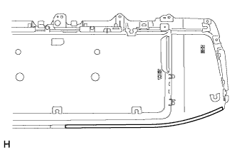
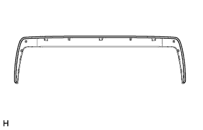

НАРУЖНАЯ НАКЛАДКА ДВЕРИ БАГАЖНОГО ОТДЕЛЕНИЯ (для моделей без кронштейна запасного колеса) > ПОВТОРНАЯ СБОРКА |
| Параметр / Устройство | Температура |
| Наружная накладка двери багажного отделения | 20–30°C (68–86°F) |
| 1. УСТАНОВИТЕ ЭЛЕМЕНТ ЗАЩИТЫ НАРУЖНОЙ НАКЛАДКИ ДВЕРИ БАГАЖНОГО ОТДЕЛЕНИЯ |
|  |
для наружной облицовки двери багажного отделения:
При использовании новой наружной облицовки двери багажного отделения:
При повторном использовании наружной облицовки двери багажного отделения:
Установите элемент защиты наружной облицовки двери багажного отделения.
|  |
для наружной облицовки двери багажного отделения № 2:
При использовании новой наружной облицовки двери багажного отделения № 2:
При повторном использовании наружной облицовки двери багажного отделения № 2:
Установите элемент защиты наружной облицовки двери багажного отделения.
| 2. УСТАНОВИТЕ НАРУЖНУЮ ОБЛИЦОВКУ ДВЕРИ БАГАЖНОГО ОТДЕЛЕНИЯ № 2 |
Введите в зацепление 4 захвата, чтобы установить наружную облицовку двери багажного отделения № 2.
Заверните 9 винтов.
| 3. УСТАНОВИТЕ ВЫКЛЮЧАТЕЛЬ ЭЛЕКТРОННОГО КЛЮЧА БАГАЖНОГО ОТДЕЛЕНИЯ (для моделей с системой посадки и запуска) |
| 4. УСТАНОВИТЕ ФИКСАТОР ОБЛИЦОВКИ ДВЕРИ БАГАЖНОГО ОТДЕЛЕНИЯ № 1 |
Установите фиксатор облицовки двери багажного отделения № 1 и закрепите его 3 винтами.
| 5. УСТАНОВИТЕ ЛАМПУ ОСВЕЩЕНИЯ НОМЕРНОГО ЗНАКА В СБОРЕ |
Установите 2 фонаря и закрепите их 4 винтами.
Подсоедините разъем.
| 6. УСТАНОВИТЕ ШНУР ЛАМПЫ ОСВЕЩЕНИЯ НОМЕРНОГО ЗНАКА (для моделей без системы посадки и запуска) |
Подсоедините разъем, чтобы установить шнур лампы освещения номерного знака.